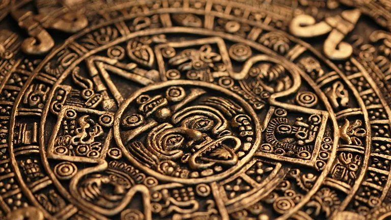
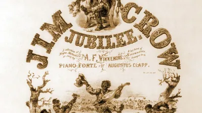
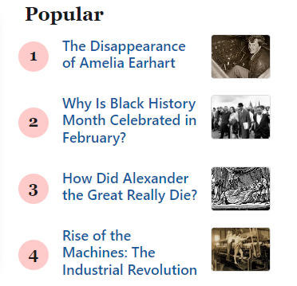

Home
Edit Page
Random Page
Entry
Search
New Page
Let us read some History!

Leap Year Logistics And Other Calendar Quirks
Why Is Black History Month celebrated In February

What Is the Origin Of The Term "Jim Crow"
What Did Cleopatra Look Like?
Seven Deadliest Weapons In History
WW1:From The First Shot Fired To Last
al-Kwarizmi
From Pirate To Admiral:The Tale Of Barbarossa
